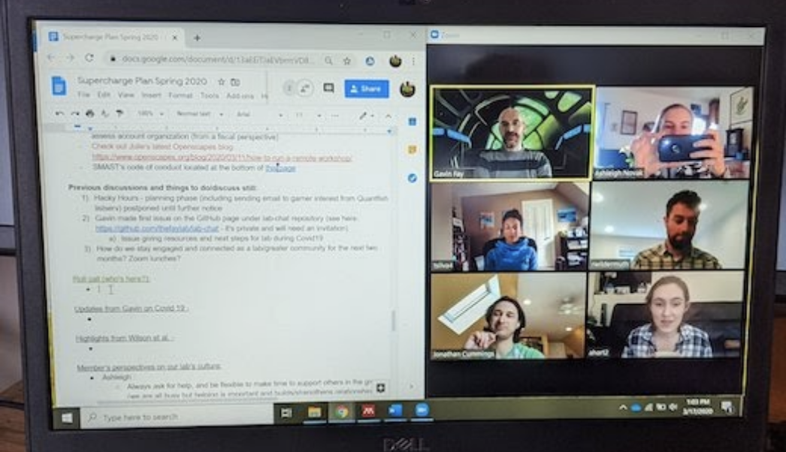

What to Expect (Program Level)
Openscapes Champions is not a typical workshop. It is cohort-based facilitated sessions to help people collaboratively evolve their work (work they’re already doing) with input from peers. It helps people reflect on and modernize how they work! The sessions introduce concepts and workflows and facilitate teams to talk about problems, so they can go and solve them with accountability and support. Note that whether people participate as teams or as individuals, we focus on teamwork and provide opportunities for people to find common parts of their workflows and “find their teams” beyond any traditional definition, so that we can all help make science less lonely and more networked.
Purpose, Outcomes, Process (POP)
This is the Champions Program POP, a planning tool that we learned from the open science team at Mozilla.
Purpose The purpose is to strengthen habits for immediate benefit that will help create long-lasting resilience in teams and workflows. We’ll help you reimagine data analysis and stewardship through exploring open tools and practices; develop modern skills and habits that are of immediate value to you, including confidence and agency as leaders; cultivate collaborative and inclusive research communities with a Future Us mindset, starting with your team.
Outcomes. Outcomes are different for everybody - this is about getting your own work done. Together we’ll work on changing habits to improve your work and teamwork so you shape where you invest based on what you need. We’ll develop a practice of reflecting, talking, and collaborating about data workflows with your team and community. You’ll leave with a tangible Pathway (a planning document) that your team will use to help identify current practices and prioritize next steps. Your team will share your Pathway as work-in-progress during our last Cohort Call. Champions have found the Pathway valuable to communicate their needs and plans and to share with supervisors as a concrete outcome.
Process. The Champions Program operates via facilitated Cohort Calls, team-driven Seaside Chats, and Coworking, and role modeling open science via How We Work — all of which are described more below. Additionally, every Champions Cohort includes at least one Mentor from the partner organization or community. Often a Mentor has participated in a Champions Cohort and expressed their interest in helping empower their colleagues while addressing needs specific to their organization.
Cohort Calls
The main synchronous time during Champions Cohorts are twice-monthly 1.5-hour sessions we call Cohort Calls. Each Cohort Call has two topics that introduce concepts, tooling, and examples from their peers, with time to reflect and discuss how the topics apply directly to their work.
Cohort Calls are highly-structured and designed to be engaging, requiring discussion and active participation through scaffolded Agendas with shared live notetaking and breakout-group discussions. We begin each Cohort Call with a reminder of our Code of Conduct and end each lesson with bite-sized Efficiency Tips and Inclusion Tips.
| Cohort Call Topics | Series Chapters | Seaside Chat Topics |
|---|---|---|
| 1. Mindset, Better Science for Future Us | mindset, better science in less time | Pathways trailhead - where are you now |
| 2. GitHub Clinic: Publishing, Project Management | publishing, project management | Shared organizing and onboarding |
| 3. Team Culture, Data Strategies for Future Us | team culture, data strategies | Pathways next steps and documentation |
| 4. Open Communities, Coding Strategies for Future Us | open communities, coding strategies | Pathways share preparation |
| 5. Pathways Share, Next Steps | pathways |
Template agendas, as well as slides, tips, and other resources we use are openly available in this Champions Cohorts Resources public folder, ready for reuse and remix.
Seaside Chats & Coworking
Between Cohort Calls, teams have synchronous spaces via Seaside Chats and Coworking to meet, ask questions, and exchange knowledge.
Seaside Chats (Lowndes et al. 2019) are when a team meets together independently for dedicated time for data/workflow discussions. Seaside Chats are where teams talk and screenshare to begin identifying and addressing shared needs. Everyone has something to learn, ask, teach; people do not need to be an expert to share what they know. Seaside Chats are encouraged to include others that are not participating in the Champions Cohort. The main purpose is to focus on the work at hand and build the habit of talking about and strengthening shared workflows with a broader group. We will provide suggestions about what you could focus on to get started.
Coworking (Lowndes et al. 2024) comes in different flavors. For Champions Cohorts, coworking involves people doing their own work at the same time together with opportunities to check in, and sometimes screenshare to get feedback or solve a problem. Seeing how other people work is a big part of this transition to working more openly and collaboratively. Some teams join Coworking together, meeting for their Seaside Chat in a breakout room with the option of talking to others in the Cohort. We will share optional Coworking times where you are welcome to come do your own work in a social setting.
Seaside Chats and Coworking have been described by participants as one of the most valuable parts of the Champions Program because it helps strengthen habits and a culture of shared workflows and learning. See also: [Sea]side Chats for data workflows, a 2019 blog.
How We Work
“How We Work” refers to the technical and cultural norms we will establish during the Champions Cohort, which we developed through our Openscapes Flywheel (Robinson and Lowndes 2022). These approaches have become some of the most valuable things teams take with them through the Champions Program, and we love hearing how folks are taking these practices to new places as they grow as leaders.
Common Workflows
We reuse what works from other places in our work (we sometimes talk about this as “forking”, borrowing a term from GitHub where you make a copy in your own workspace so you don’t have to start from scratch). This often shows up in Champions Cohorts with teams reusing the Agendas structure and the concepts of Seaside Chats and Coworking with their broader research groups.
We discuss practices from different open communities, and teams contribute so that others can build from their work as well.
Inspire
Storytelling and sharing what works is so valuable for others to learn from and be inspired by. Many concepts and possibilities are new, so there is value in the idea of “show me” in a way that resonates.
Inspiring others happens in small moments, that can look like someone leaning forward in their chair saying “I want to do that” when someone else is screensharing during Coworking. It can mean asking for 5 minutes at the start of a meeting to share something new you learned. These moments also build up to real culture change as folks give talks to their organizational leadership and broader open communities, and the Flywheel turns again.
Welcome
We are intentional to create a welcoming environment, through art, design, and clear norms. “You are all welcome here.” We aim to create a positive learning space where everyone is welcome to ask questions and participate. We start off each call with a reminder of our Code of Conduct.
Space & Place
Together we will create space and place to learn, collaborate, and create shared workflows so that we aren’t all responsible for this alone.
Each Cohort will have a single shared folder (via Google Drive/ Microsoft Teams) that we will share ahead of time and will be linked from a calendar invite so there are multiple ways to find it again. This will have all resources specific to each Cohort. Each Cohort Call will have a highly-structured Agenda document so people know what is planned — and so they can more easily catch up if/when the internet drops out. We use headers so that it is possible to navigate via the Table of Contents view. (In Google Docs, you can enable Outline view by selecting View > Show outline.) These agendas are for live-note taking throughout the Cohort Call. It is a shared responsibility to contribute & help document for Future Us; this is the main place for nonverbal contribution, side conversations, and to reinforce ideas.

During Cohort Calls, we encourage videos on (“faces on”) – but it is okay if this is not possible for any reason. In Zoom, the Gallery View is enabled by clicking Settings > Video > Display up to 49 participants. We ask people to mute liberally/quickly to reduce background noise – but unmute to speak up at any point. Participants will interact in small groups via breakout groups, which will help them reflect on how examples apply to their work and to get to know each other.
We have a flipped approach to screensharing. This shows up in two ways. First, we do not screenshare slides while presenting. Instead we provide links to slides and presenters indicate when everyone should advance to the next slide. This minimizes bandwith issues and enables everyone to zoom in, click on links, linger, and go back, as they prefer. Second, we do screenshare to demonstrate keyboard shortcuts, live examples of how we work, and troubleshoot. Screensharing to show current practices and ask for help is a big part of Coworking sessions and Seaside Chats.
At the start of each Cohort, we send Calendar invites to everyone for all Cohort Calls and optional Coworking sessions. These include the Zoom / Teams / Google Meet to join, and a link to the Cohort’s shared Folder so we don’t all have to hunt for those each time.
We start and end on time.
Learning & Trust
Learning new things is uncomfortable and it can feel vulnerable to ask questions. Through creating a welcoming space we can invest in learning and trust together. We know there is a range of technical experience and comfort in every cohort – by design! Participants are all opting in to the cohort to learn and improve work around data-intensive science. Everyone is imperfect and learning together – Openscapes team included. We build accountability to each other.
Discussions focus around collaborative mindsets, norms, and software to enable open, reproducible, inclusive research, introducing tools like R, Python, tidyverse, GitHub, RMarkdown/Quarto, Google Drive, JupyterHubs and practices from open source communities, inclusive design, psychological safely, facilitation techniques, with examples from relevant research domains including the Ocean Health Index and previous Champions.
Examples of how teams strengthen learning and trust within their groups are captured in our Pathways share in the final Cohort Call. Common themes are, meeting regularly, knowing who and where to ask for help, and building shared documentation and resources to reduce emails asking where things are.
Work Openly
We role model working openly throughout the Cohort by sharing ideas, resources, and screensharing. All our resources are created with the same tools we teach research teams (R, GitHub, Quarto, Google Drive, JupyterHub) and shared openly. During Cohort Calls, the Agenda and open facilitation style is part of working openly — we iterate openly as facilitators and mentors, for example through adjusting the timing live in the Agenda document.
We send Digests the week following each Cohort Call (early, on Monday or Tuesday). Each digest includes the Call’s goals, links to the Call’s agenda, slides, and recording, and some excerpts from the shared notes. These provide a touch point in the week between Calls. See examples: 2022-nasa-champions, 2022-noaa-afsc, 2021-fdd.
Many teams begin working more openly via shared documentation, project management, metadata, file organization and naming, and code organization and interoperability, using tools like Google Drive/Microsoft Teams, GitHub, R, and Python.
Supercharge Your Research
We’re often asked what people can do to further prepare in advance. Additional suggested reading include:
Our path to better science in less time using open data science tools (Lowndes et al. 2017). This describes a marine science team’s transition to open collaborative teamwork. It was the original inspiration for creating the Champions Program and heavily influences the Core Lessons.
Supercharge your research: a ten-week plan for open data science (Lowndes et al. 2019). This was co-authored with the inaugural Champions Cohort, capturing the most valuable take-aways for marine and environmental science early career faculty.
Shifting institutional culture to develop climate solutions with Open Science (Lowndes et al 2024, Ecology & Evolution). This was co-authored by Openscapes mentors across organizations – including NASA Earthdata, NOAA Fisheries, EPA, California Water Boards, Pathways to Open Science, Fred Hutch Cancer Center.
Learn more about How We Work
- Openscapes Approach Guide
- The Openscapes Flywheel: A framework for managers to facilitate and scale inclusive Open science practices (Robinson & Lowndes 2022)
- 3 lessons from remote meetings we’re taking back to the office (Lowndes, Cabunoc Mayes & Sansing 2020)
- How to run a remote workshop, Openscapes/Open Leaders-style (complementing blog post)
See also other publications and presentations at openscapes.org/media.
Teams: FAQs
One thing that makes Openscapes Champions Cohorts impactful is a focus on teamwork. People most often sign up as teams, with varying skillsets and responsibilities, perhaps with a shared project and perhaps not. People can also sign up as individuals. Some Champions have said that “finding their teams” during the cohort – finding what’s common and feeling less alone while learning skills with their peers – has been the most valuable part of Openscapes.
Openscapes Champions was originally designed with academic research groups in mind, to provide resilience where there is high turnover and folks might be struggling with similar challenges around data analysis — while working on different projects. But over half of cohorts have been groups with different structures and needs, some producing big annual government reports or indicators! We expect — and design for — a range of technical ability and comfort with technology and open science concepts. The most important thing is that people opt-in who have interest in improving their work somehow and want to strengthen their collaboration and leadership skills.
Here are answers to some Frequently Asked Questions (FAQs).
How many people participate?
The Champions Program operates as cohorts of 7-10 teams of up to 5 people; 40 people max in the cohort.
Why do people join a Champions cohort?
People join because they (as an individual or team):
- Want to learn about or work with open Science
- Want to meet peers working on similar workflow or data issues
- Have a ‘big goal’ that involves changing how you work; you want to make progress on making your data and science workflows more efficient and reproducible
What is a team?
There is a lot of flexibility in choosing your team.
Teams do not need to be a formal research group; they can be collaborating in other ways. Team members do not all need to have technical or data interests, but share a curiosity and interest in improving something about how they work. Participants are expected to have ‘Seaside Chats’ together with their broader research groups in the weeks between Cohort Calls, so it is OK, and expected, that only a subset of a team participate.
What skills are required? Coding? GitHub?
No. This is not a coding workshop.
The purpose is strengthen relationships and shared systems with folks with different responsibilities and skills, so there is less reinventing and less knowledge lost.
During the cohort, people focus on what is important to them, often something hard to do, something they want to change. Throughout the cohort, as Openscapes introduces modern concepts, tooling, and peer examples, people learn together and get unstuck through identifying and making progress on barriers. Each cohort call (90 minutes) has 30-40 minute of lessons and the rest of the time is you reflecting and discussing how this could help you with your own work.
How do I choose my team?
Choosing your team can be based on interests around data analysis and around leadership. There are no prerequisite skills to participate, just an interest to learn and contribute. The “homework” between Champions sessions and beyond is to meet with your full research group (beyond workshop participants, and optional for the lead) to establish shared workflows and habits within the research group.
How you define "team" is completely up to you and having one person be in the cohort and using in-between session "seaside chats" to bring back the information to another group is 100% fine. That is common in the cohorts. In my first Openscapes cohort, I was the only person from my project. My personal goal was to use the Openscapes structure to help a team that I am on figure out how to tackle some off-boarding tasks due to a retirement. During my second cohort, there were 2 team members in the cohort and 2 not in the cohort. We focused on standardizing our data to get ready for our GitHub served data package. For the 3rd cohort I am doing, 2⁄3 of our team is in the cohort as we start to get organized for a major revamp of our report into a reproducible workflow. - Eli Holmes (NOAA NWFSC, NMFS-Openscapes)
We e invite research group leads (faculty, lecturers, program managers, etc.) and members (students, analysts, lab managers, etc.) participate together as teams so that 1) everyone sees and values what is possible; 2) leads enable members to invest time to learn skills and develop shared workflows; 3) members have guidance, agency, and support to incorporate concepts into their work; and 4) everyone can make progress on what is important to them, while strengthening the community of practice within the research group, cohort and beyond.
What if I don’t have a team?
That’s ok, please sign up! We’ll help you connect with participants who share some of your goals or needs.
Is attendance required for all Cohort Calls?
Yes; we do try to have everyone on the team attend all Cohort Calls – but know that sometimes that’s not possible. All the lessons, slides, and also recordings are available if people have to miss, but everyone should sign up expecting to be at the Cohort Calls.
Do I as the PI need to attend the Cohort Calls, or just my team?
It’s important that team leads attend with their team. The Champions program is designed to reduce the burden for PIs in the long term and develop leadership within and across their teams. With this investment now, team leads and members will build resilient and enduring practices for their research group, even as that research group changes into the future. The idea is that together, the whole team sees what’s possible with open data science and builds confidence, ownership, and a shared pathway forward. Then it’s the entire team, not just the PI, who puts it to practice in between sessions.
Can we have smaller teams so more teams can participate in a cohort?
From our experiences so far think that ~8 teams with 4-5 participants per team (maximum of ~40 participants) is a good size so there is time for everyone to be engaged and contributing (and not feeling like a passive webinar). Also, having a good amount of members per team is really key to the whole model of Openscapes: we want to reduce the amount of burden for PIs to have to relay info to their research groups. Having more members participate as a team in the Openscapes program helps more team members feel agency to build resilient systems with less transmission time.